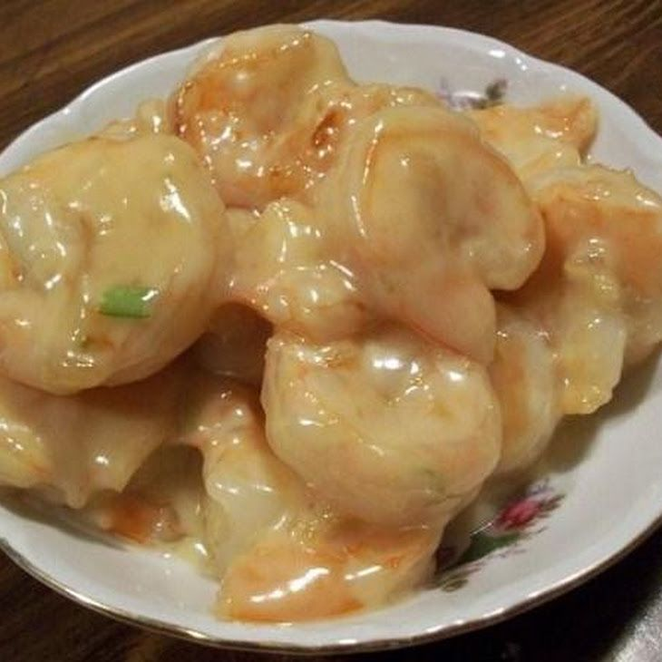

Coconut Shrimp

Description
The traditional Chinese buffet entrée inspired this creamy Chinese coconut shrimp recipe. It is packed with nutty and sweet flavors with hints of citrus that pair well with one another. The indulgent, silky smooth sauce is a perfect pairing with shrimp and prawns. Serve the dish over rice, quinoa, or even creamy mashed potatoes to soak up all the sauce.
Ingredients
- 12 oz coconut milk
- 3 tbsp minced garlic
- 1 tbsp fresh garlic
- 1 tbsp fresh lime zest
- 2 tbsp fresh lime juice
- 2 tbsp sugar
- 1 tsp kosher salt
- 2 lbs shrimp
- 1 cup toasted coconut
Steps
- In a large skillet, heat up coconut milk with garlic, ginger, lime juice, lime zest, sugar, and salt. Bring to a boil for several minutes to thicken.
- Add shrimp and cook until shrimp are opaque and slightly curled up. If you prefer a thicker sauce then mix 1 tsp cornstarch with 2 tbsp water and add slowly to the boiling shrimp mixture and cook until thickened.
- Serve over rice and top with toasted coconut and lime zest.